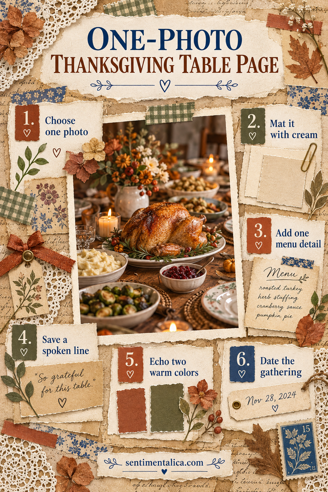
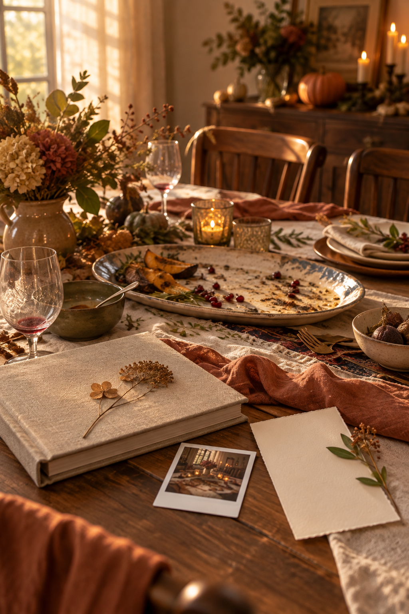

You do not need a perfect group portrait to remember Thanksgiving. A photograph of the table can hold the whole atmosphere: the dishes people reached for, the light on the plates, a chair pulled close. With one image and a few true details, it can become a complete scrapbook page.
This layout is especially useful if you were too busy enjoying the day to take many pictures.
Choose the photo that contains a clue
Look for a detail that belongs to your gathering rather than an ideal holiday table: a familiar serving bowl, a handwritten place card, a lopsided centerpiece or the space where someone always sat. A technically imperfect photograph can be more valuable than a polished one.
If the only good image shows a person, use it. This tutorial does not require an empty table; it simply asks you to let one photograph lead.
Give the image a quiet frame
Print the photograph at a size large enough to be the first thing you notice. Mat it on cream or warm ivory paper with a visible 3–5 mm border. Set it slightly off center. Do not surround it with several strong patterns.
Choose two colors from the photograph, perhaps walnut and sage, then add one small warm accent such as terracotta. The color connection can be loose. It is the relationship, not a perfect digital match, that makes the page feel coherent.
Add one menu detail
Write the name of a dish on a narrow strip or save a real menu fragment. If a recipe has already been documented elsewhere, choose a different clue: who brought the rolls, what ran out first, or the dish no one expected to love.
Place this detail close to the photograph, not in a remote corner. It should read as part of the same memory.
Save one spoken line
Ask yourself what someone said at the table. It may be funny, practical or affectionate. A real sentence often tells more about the gathering than a generic title such as “Blessed.” If you cannot remember exact words, label it as a paraphrase rather than inventing a quotation.
Put the line on a small journaling card beneath the photograph. Leave room for two more sentences: who was there and what happened just after the picture was taken.

Finish without crowding the story
Repeat a color from the photograph once at the opposite side of the page. Add a date and place label. Then step back. If the image, menu detail and spoken line already feel connected, the page is finished.
Try the thumbnail test: photograph the layout with your phone and view it small. The table photograph should remain the focal point. If an embellishment wins, reduce it.

If you want a rustic kitchen accent
Your saved menu and a scrap of kraft paper may be all the decoration needed. For an optional illustrated element, the live Country Kitchen collection is a relevant source of pottery, wheat and pantry-herb imagery. Check the listing for exact contents before choosing an image, and keep your own photograph in the lead.
A table photograph can say “we were here” without showing every face. The small factual details around it will help you remember how that day actually felt.